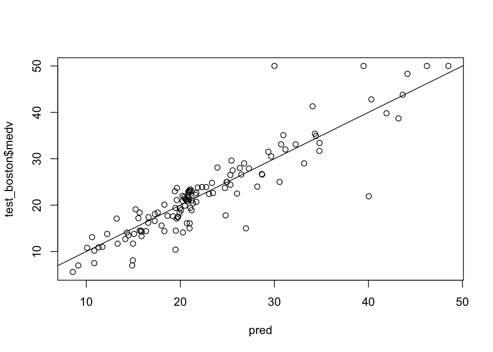
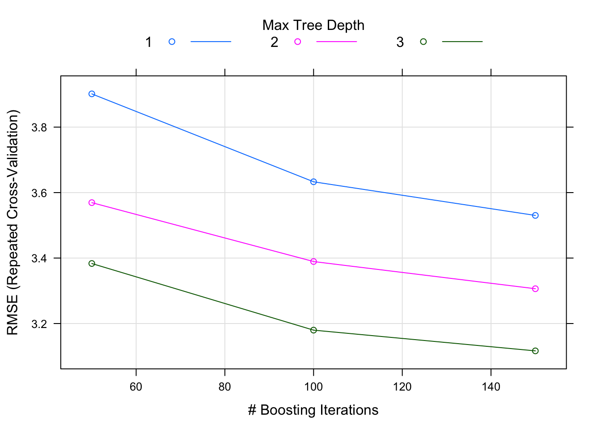
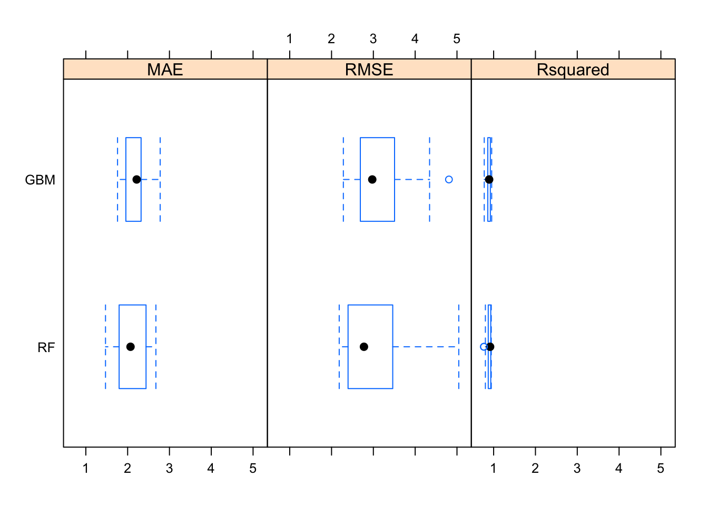

Decision tree and Random forest
Decision trees: regression
설명변수 공간을 다수의 영역으로 분할하는 방법
해당 관측치가 속하는 영역의 훈련 관측치들의 평균 (회귀) 또는 최빈값 (분류)을 사용하여 예측한다.
<메이저리그 타자의 연봉을 예측하는 문제>

advantage
- glass-box model
- intuitive
회귀 문제에서는 아래 식으로 주어진 RSS 를 최소로 하는 셜명변수 공간을 찾는 것이 목적
\[\sum_{j=1}^J\sum_{i\in R_j}(y_i - \hat{y}_{R_j})^2\]
\(R_j\): jth 설명변수 공간
\(\hat{y}_{R_j}\): jth 설명변수 공간에 속한 훈련 관측치 반응변수들의 평균값
그러나, 설명변수 공간을 J개로 분할하는 모든 가능한 경우를 고려하는 것은 계산상 실현이 불가능하다.
recursive binary splitting
- top-down
- greedy
drawbacks
- greedy (short-sighted)
- prone to overfitting
What “greedy” means?
Let’s say currency including 25c, 15c and 1c coins,
and develop an algorithm to make changes for 30c.
final goal: using the smallest number of coins possible
greedy algorithm: use the largest unit of coin
greedy algorithm solution: 25 + 1 + 1 + 1 + 1 + 1 = 30c, with 6 coins
optimal solution: 15 + 15 = 30c, with 2 coins
strategies to overcome drawbacks
pruning
: 트리빌딩 초기 쓸모 없어 보이는 분할 이후에 아주 좋은 분할이 올 수 있다. 따라서, 더 나은 전략은 아주 큰 트리를 만든 다음에 그것을 다시 prune하여 subtree 를 얻는 것이다. 그러나, 이렇게 모든 가능한 subtree 에 대해 교차 검증(혹은 검증셋 기법)을 이용하여 검정오차율를 추청하는 것은 너무 번거롭다. 대신, 우리는 고려할 작은 subtree 집합을 다음 알고리즘으로 선택할 것이다.
cost complexity pruning (weakest link pruning)
모든 가능한 subtree 를 고려하는 대신에 tuning parameter \(\alpha\) (>=0) 에 의해 색인된 일련의 tree 들을 고려.
각 \(\alpha\) 값에 대해, 아래 식이 최소가 되는 subtree T 를 구할 수 있다.
\[\sum_{j=1}^J\sum_{i\in R_j}(y_i - \hat{y}_{R_j})^2 + \alpha T\]
T: subtree T 의 number of terminal nodes
\(\alpha\): tuning parameter
\(\alpha = 0\)일 때, subtree T = \(T_0\)
\(\alpha\)가 증가함에 따라 많은 터미널 노드가 있는 트리의 경우 \(\alpha T\) 항이 크게 증가할 것이므로 트리가 작을 때 위 식의 값이 최소로 되는 경향이 있다.
즉, tuning parameter \(\alpha\) 는 서브트리의 복잡도와 훈련자료에 대한 적합 사이의 trade-off 를 제어한다.
k-fold CV 을 이용해서 검정오차를 \(\alpha\)의 함수로 평가하고, 평균 검정오차를 최소로 하는 \(\alpha\)를 선택.
Linear model vs. Tree-based model

Decision trees: classification
\(\hat{p}_{mk}\)를 m번째 설명변수 공간 내 k class에 속하는 훈련 관측치들의 비율이라고 할 때, 아래 분류오류율을 최소로 하는 것이 목적이다.
\[E = 1 - \max(\hat{p}_{mk})\]
binary split 과정에서 분류오류율을 사용할 수 있지만, 실제로는 node purity 에 더 민감한 아래 두 가지 척도를 주로 사용한다.
- 지니 지수(Gini index)
- 교차엔트로피(cross-entropy)
Gini index: node purity \[G = \sum_{k=1}^{K} \hat{p}_{mk}(1-\hat{p}_{mk})\]
Cross-entropy
\[D = - \sum_{k=1}^{K} \hat{p}_{mk}log(\hat{p}_{mk})\]
Bagging
a.k.a. bootstrap aggregation
기계학습모델의 분산을 줄여 예측 정확도를 증가시키기 위한 범용 절차 (general-purpose procedure)
\[\hat{f}_{bag}(x) = \frac{1}{B}\sum_{b=1}^{B}\hat{f}_b(x)\] average for regression
majority rule for classification

배깅에 사용되지 않은 관측치들을 Out-of-bag (OOB) 관측치라고 함.
OOB 오차
: i번째 관측치에 대해 그 관측치가 OOB 이었던 각각의 트리를 이용하여 반응변수 값을 예측할 수 있다.
: 교차검증 또는 검증셋 기법을 수행하기 힘든 규모가 큰 데이터셋에 대해 특히 편리함.
Variable importance 주어진 설명변수에 대한 분할로 RSS (or Gini index) 가 감소되는 총량을 모든 B개 트리에 대해 평균한 값이 크면 해당 설명변수가 중요하다고 할 수 있다.
Random Forest
배깅에서와 마찬가지로 bootstrap 에 의해 다수의 트리를 만든다. 그러나, 배깅과 달리 트리 내에서 split 이 고려될 때마다 p개 설명변수들의 전체 집합에서 랜덤하게 m개 설명변수가 선택된다. rule of thumb, \(m = \sqrt{p}\)
결국, 트리들 간의 상관성을 줄여, 분산을 줄이는 방법임.

자, 이제 실습을 해보자.
library(MASS)
?Bostonmedv: median value of owner-occupied homes in $1K
library(caret)set.seed(1)
train_index = createDataPartition(1:nrow(Boston), p=0.75, list = FALSE)
train_boston = Boston[train_index,]
test_boston = Boston[-train_index,]set resampling method
myTrCtrl = trainControl(method = "repeatedcv", number = 10, repeats = 2)build model by using training data
set.seed(999)
rf_model = train(medv ~ ., data = train_boston, method = "rf", trControl = myTrCtrl, importance = TRUE)
rf_model## Random Forest
##
## 382 samples
## 13 predictor
##
## No pre-processing
## Resampling: Cross-Validated (10 fold, repeated 2 times)
## Summary of sample sizes: 343, 343, 345, 345, 344, 344, ...
## Resampling results across tuning parameters:
##
## mtry RMSE Rsquared MAE
## 2 3.421202 0.8778653 2.357988
## 7 3.070891 0.8903573 2.119448
## 13 3.185884 0.8776762 2.198186
##
## RMSE was used to select the optimal model using the smallest value.
## The final value used for the model was mtry = 7.plot(rf_model)mtry: Number of variables randomly sampled as candidates at each split. Note that the default values are different for classification (sqrt(p) where p is number of variables in x) and regression (p/3)
test set 에서의 성능
pred = predict(rf_model, newdata = test_boston)
plot(pred, test_boston$medv)
abline(0,1)
sqrt(mean((pred - test_boston$medv)^2))## [1] 3.928236rf_imp = varImp(rf_model, scale = F)plot(rf_imp)Boosting
여러개의 decision tree 를 만들어 결합하는데, 배깅과 달리 bootstrap 샘플링을 하지 않고, 대신 모든 훈련셋 자료를 이용하여 순차적으로 천천히 학습한다.
Regression decision tree boosting
\(\hat{f}(x)\) = 0 이라 하고, 훈련셋의 모든 i에 대해 \(r_i = y_i\) 로 설정한다. (r: residuals)
b = 1,2,…,B 에 대하여 다음을 반복한다.
d개의 분할(d+1 터미널 노드)을 가진 트리 \(\hat{f}^b\)를 훈련자료 (X,r)에 적합한다.
새로운 트리의 수축 버전을 더하여 \(\hat{f}(x)\) 를 업데이트한다.
\[\hat{f}(x) \leftarrow \hat{f}(x) + \lambda \hat{f}^b(x)\]
- 잔차들을 업데이트한다.
\[r_i \leftarrow r_i - \lambda \hat{f}^b(x_i)\]
- 부스팅 모델을 출력한다.
\[\hat{f}(x) = \sum_{b=1}^B \lambda \hat{f}^b(x)\]
Boosting 의 tuning parameters
- B: number of trees
- \(\lambda\): 수축 파라미터 (학습 속도를 제어)
- d: number of split in each tree (boosting 의 복잡도를 제어)

자, 바로 Boston 데이터셋에서 실습을 해봅시다.
set.seed(999)
gbm_model = train(medv~., data = train_boston, trControl = myTrCtrl, method = "gbm", verbose = F)
gbm_model## Stochastic Gradient Boosting
##
## 382 samples
## 13 predictor
##
## No pre-processing
## Resampling: Cross-Validated (10 fold, repeated 2 times)
## Summary of sample sizes: 343, 343, 345, 345, 344, 344, ...
## Resampling results across tuning parameters:
##
## interaction.depth n.trees RMSE Rsquared MAE
## 1 50 3.901649 0.8233716 2.725915
## 1 100 3.633085 0.8452395 2.496197
## 1 150 3.530275 0.8557658 2.415587
## 2 50 3.569309 0.8507147 2.463461
## 2 100 3.389451 0.8666858 2.388910
## 2 150 3.306348 0.8724642 2.346318
## 3 50 3.383426 0.8671826 2.319509
## 3 100 3.179842 0.8828976 2.237975
## 3 150 3.116506 0.8872130 2.214115
##
## Tuning parameter 'shrinkage' was held constant at a value of 0.1
##
## Tuning parameter 'n.minobsinnode' was held constant at a value of 10
## RMSE was used to select the optimal model using the smallest value.
## The final values used for the model were n.trees = 150,
## interaction.depth = 3, shrinkage = 0.1 and n.minobsinnode = 10.interaction.depth: the maximum depth of each tree, i.e., the highest level of variable interactions allowed n.trees: number of trees to fit
shrinkage: learning rate
n.minobsinnode: the mininum number of observations in the terminal nodes of the trees
plot(gbm_model)
gbmGrid <- expand.grid(interaction.depth = c(1, 5,10), n.trees = c(50*(1:10)), shrinkage = 0.1, n.minobsinnode = 10)summary(gbm_model, las = 1)## var rel.inf
## rm rm 44.01473135
## lstat lstat 30.88274794
## dis dis 6.16679041
## nox nox 4.88548338
## crim crim 4.59543773
## ptratio ptratio 3.30824158
## age age 1.88598637
## tax tax 1.47300121
## black black 1.23655499
## indus indus 0.81033147
## rad rad 0.43222105
## chas chas 0.21724337
## zn zn 0.09122915gbm_pred = predict(gbm_model, newdata = test_boston)
sqrt(mean(gbm_pred - test_boston$medv)^2)## [1] 0.4583329resamps = resamples(list(RF = rf_model,
GBM = gbm_model))
resamps##
## Call:
## resamples.default(x = list(RF = rf_model, GBM = gbm_model))
##
## Models: RF, GBM
## Number of resamples: 20
## Performance metrics: MAE, RMSE, Rsquared
## Time estimates for: everything, final model fitsummary(resamps)##
## Call:
## summary.resamples(object = resamps)
##
## Models: RF, GBM
## Number of resamples: 20
##
## MAE
## Min. 1st Qu. Median Mean 3rd Qu. Max. NA's
## RF 1.470750 1.797423 2.068841 2.119448 2.439328 2.676035 0
## GBM 1.758432 1.966517 2.216221 2.214115 2.318802 2.778140 0
##
## RMSE
## Min. 1st Qu. Median Mean 3rd Qu. Max. NA's
## RF 2.183433 2.399354 2.775105 3.070891 3.441502 5.043234 0
## GBM 2.282409 2.690868 2.973839 3.116506 3.473812 4.807602 0
##
## Rsquared
## Min. 1st Qu. Median Mean 3rd Qu. Max. NA's
## RF 0.7655401 0.8721144 0.9158214 0.8903573 0.9307836 0.9431408 0
## GBM 0.7752630 0.8630659 0.8927498 0.8872130 0.9191522 0.9532604 0bwplot(resamps)